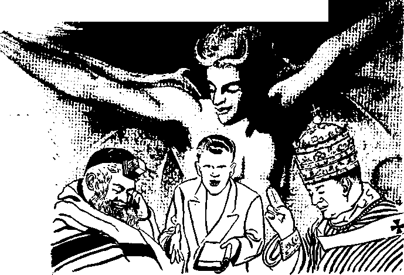
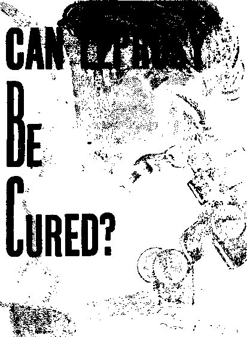
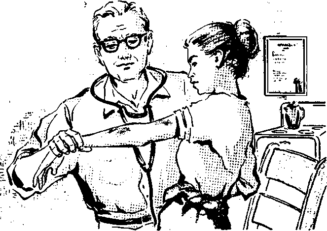
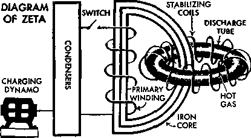
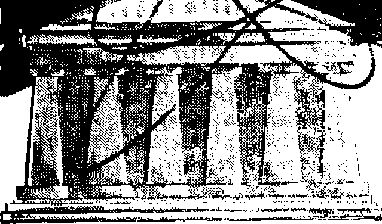

Masters of Deception
Can Leprosy Be Cured?
Typhoon Ida Left Her Mark
Atomic Question and the Church
JANUARY 8, 1959
THE MISSION OF THIS JOURNAL
Naw* »oorc«»4hat or® able to keep you awoke to th» vital istue* of our time* must be unfettered by censorship and setfish interests. “Awake I" has no betters. It recognizes facts, faces facts, is free to publish facts. It is not bound by political ambitions or obligations; it is unhampered by advertisers whose toes must not be trodden on; it is unprejudiced by traditional creeds. This journal keeps itself free that it may speak freely to you. But it does not abuse its freedom. It maintains integrity to truth.
“Awake!" use* the regular news channels, but is not dependent on them. It* own correspondents are on all continents, in scores of nations. From the four corners of the earth their uncensored, on-the-scenes reports come to you through these columns. This journal's viewpoint’ is not narrow, but is international. It is read in many nations, in many languages, by persons of ail ages. Through its pages many fields of knowledge pass in review—government, commerce, religion, history, geography, science, social conditions, natural wonders—why, its coverage is as broad as the earth and as high as the heavens.
“Awake!" pledges itself to righteous principles, to exposing hidden foes and subtle dangers, to championing freedom for all, to comforting mourners and strengthening those disheartened by the failures of a delinquent world, reflecting sure hope for the establishment of a righteous New World.
Get acquainted with "Awake!" Keep awake by reading “Awake!”
Published Semimonthly by
WATCHTOWER BIBLE AND TRACT SOCIETY OF NEW YORK, INC* 117 Adams Street Brooklyn 1, N.Y., U.S.A.
N. H, Knorr* Grant Suiter, Secretary
Printing thl« issue: 2TA50,OOQ Five cents a copy
“Awals!” Is pOlisfeed Is the following 1? Ianflno®s:
Afrikaans, Danish, Dutch, English, Finnish, French, German, Greek, Italian, Japanese* Norwe-(Ian, Portuguese* Spanish, tiwediah, Tajjalog.
Monthly—Cinyatijs, IndoneBiau, Ukrainian! Zulu.
Yearly subscription rates.
Office* for semimonthly editions
AMffha. 11.$., 117 Adams St,, Brooklyn 1, N.Y, $1
Australia, 11 Beicsfoni Rd., strulhfleUl, N.S.W. IS/-Ctnada, 150 Bridgeland Ave., Toronto 19, Ont $1 England, 34 Craven Terrace, London W. 2 7/-
New Zealand, 621 Nev North Rd.. Auckland 8,W. 1 7/-
Sonth Africa, Private Bag, Elandsfotilein, Tri. 7/-'
Montljly editions cost half the above rate*.
Remittance* for subscriptions should be writ to the office In your country. Otherwise send your remittance to Brooklyn, Notice of expiration is sent at least two Issues before subscription expires.
CHANGES OF ADDRESS shod* teachtlfrty day* before year moving date. Give i$ yoir old and new address (if poulble, year old address label)* Write Watchtower* 117 Adan* Street, Brooklyn 1, New York, U.S.A,
Entered as Mcrmd-clua matter at Brooklyn, N. Y. Printed in U.S.A.
The Bible tranalatlM awd In “Awake!” Is the New World Tran«ratlc0 of tie Holy Scriptures* Whan othr transition* are isep the following symbols will appear behind the etatlom:
AS - American Standard .Version AT — An American Translation A7 - Authorised Version (1611) Da — J. N, Derby’s version
Dv *- Catholic Douay version BD - The Emphatic Dlaglotl JP — Jewish Publication Soc. L/6 ~ Liaac LooserJa version
Mo — James Moffatt's version .Ro — J. B. Rotherham's version JCS — Revised Standard ’.'eraion YjJ — Robert Young's version
CONTENTS
Atomic Question and the Church
Constantine—a Christian Emperor? 24 “Your Word Is Truth”
Why Jehovah's Witnesses Quote the Bible
Jehovah’s Witnesses Preach in All the Earth—Ghana
Seeds of Delinquency
All
life comes from precedent life; a rule known as the “law of biogenesis.” It ail emanates from one primal source, God the Creator, even as the Bible shows: “For with you [God] is the source of life.” And as far as we are concerned, life is a conditional gift, even as it was for the first man Adam.—Ps. 36:9; Gen. 2:17.
God sets a very high value on life, and those who would continue to enjoy it must do likewise. As his Son Jesus once asked: “What benefit will it be to a man if he gains the whole world but forfeits his life? or what will a man give in exchange for his life?” Absolutely nothing; for what good could all this world be to one who is dead?—Matt. 16:26, mar.
Today, more than ever before, men prize life lightly. Especially is this true of modern youth. For the sake of thrills some of them readily risk their own life and that of others. They do not hesitate to kill a person for the sake of a1 few dollars, nor to settle gang disputes by homicide, nor even to murder members of their own family because of some petty grievance
Of course, totalitarian rulers never did have any regard for human life. Nazi Germany with its slaughter of millions of Jews; godless Russia with its countless purges and its rape of Hungary; communist China with its systematic slaughter of hundreds of thousands of “enemies of the people,” all testify to that fact.
Included also must be those whose very profession involves the taking of human life. Thus British General Montgomery in his Memoirs, just recently published, wrote: “The frightful casualties appalled me. The so-called ‘good fighting generals’ of the war appeared to be those who had a complete disregard for human life.”
Truly, as regards the preciousness of life, ‘God's thoughts are not man’s thoughts, neither are man’s ways God’s ways.’ (Isa. 55:8) He, the Giver of life, values it so highly that he decreed the principle of “life for life.” That it applies to all mankind is apparent from the fact that God stated it in the rainbow covenant that he gave to our ancestors who survived the great Deluge: “From the hand of every living creature shall I ask it back; and from the hand of man, from the hand of one who is his brother, shall I ask back the soul of man. Anyone shedding,man's blood, by man will his own blood be shed.”—Gen. 9:5, 6.
In fact, in God’s law to Moses not even the accidental manslayer was let go scot free. He had to take asylum in one of the refuge cities until the death of the high priest, which may have involved as much as forty years. More than that, if the judges were convinced that in times past he had hated the -man he accidentally killed, his accidental manslaughter charge would be changed to first 'degree murder and he would be executed.—Num. 35:9-29; Deut. 4:41,42.
There was a time when man’s greed made human life seem extremely cheap. Thus in England some 150 years ago death was the penalty for stealing five shillings or more. Late in 1958, however, there was such world-wide indignation over the sentence of death passed upon an American Negro for having stolen $1.95 that the governor of his state commuted the sentence to life imprisonment.
While there can be no justification for capital punishment in such cases, it does appear, in view of Scriptural principles, that the pendulum has swung the other way. Thus the New York Times, October 27, 1958, told of a “terrifyingly real” and "extremely unpleasant” television program of the day before which, “by pure shock,” “by an almost morbid attention to detail” and “with almost agonizing deliberation," did all it could to discredit capital punishment.
Typical also is the position taken by Wilbur G. Katz, University of Chicago Law School professor. According to him capital punishment serves no purpose, does not act as a deterrent and therefore “there is no justification for this form of retribution, scientifically or theologically.”—The Christian Century, September 24, 1958.
That capital punishment is not “scientific” cannot be dogmatically stated so long as some of the world’s leading law enforcement officers are in favor of it. If it were uniformly invoked it would be the deterrent that God’s Word indicates it is; which fact also disposes of “theological” objection to it.—Deut. 19:20.
But is there not always the danger that an innocent person may be put to death on the testimony of false witnesses, as Naboth was? (1 Ki. 21:1-16) True, and that is why God’s law required that false witnesses be punished with the same penalty they sought to have inflicted upon others. Further, this highlights the responsibility resting upon the judiciary to satisfy themselves as to the facts and the integrity of the witnesses.—Deut. 19:21.
Logic alone should tell us that when one man irrevocably deprives another of literally everything, such a man should not be permitted the opportunity to do the same to any other human creature; and the only way to prevent his ever doing it again is to take frdm him what he took from another, his life.
In finding fault with capital punishment for murder are we not being governed by sentiment rather than logic and justice? Is not the Giver of life, the Most High God, perfect in wisdom, justice and love, in the best position to state what is the proper penalty for one who deliberately takes the life of another? In finding fault with this penalty are we not finding fault with God? Is it not his Word that plainly states that ‘man was to be in God’s image’ by executing the murderer? (Gen. 9:6) Surely! So let us get a proper balance between our justice and love of neighbor. Let us adjust our sympathies and thinking according to God’s higher ways and thoughts, for they cannot be improved upon by us.
of deception
IN 1856 a South African native by the ' name of Umlan jeni convinced a number of tribes that if they would slaughter all their cattle, destroy their corn and refrain from planting more crops, their ancestors would rise up and drive the English
into the sea. He also
claimed that his visions revealed droves of cattle that belonged to their ancestors coming over the hills to them. Each man would have as many as he wanted, provided that he had the space.
What i$ the protection against religious deception? Who is behind religious falsehood*?
Besides that, the com pits would be miraculously filled. The tribes who believed this self-styled prophet were deceived and suffered greatly.
It may be difficult for some people to understand how anyone could be so gullible as to fall victim to such obvious falsehood. But they fail to realize that religious ignorance opens the door to easy deception. When a people are taught that their dead ancestors are still alive, should it seem ridiculous to them to say that their ancestors will deliver them and feed them? It may be that Umlanjeni was convinced that his visions were true. If so, he was the victim of even greater deceivers than he was.
There have been many men who have had false visions and have preached them with ardent zeal. Some were the founders of great religious sects that have multitudes of devotees today who cling tenaciously to their founders’ falsehoods. They may be very sincere, but their sincerity does not make their beliefs the truth. It does not alter the fact that they are being deluded.
In the ancient civilizations of Egypt and Babylon the priestly class perpetuated the religious falsehoods that enslaved the people. They taught the people to worship lowly animals, birds, reptiles and insects as well as lifeless stone images. They even claimed that the king was an incarnate god.
Regarding the kings of Egypt Sir James Frazier, in his book The Golden Bough, said: “In the course of his existence the king of Egypt exhausted all the possible conceptions of divinity which the Egyptians had framed for themselves. A superhuman god by his birth and by his royal office, he became the deified man after his death. Thus all that was known of the divine was summed up in him.”
During the time of the Chinese empire so many persons made claims of being incarnate gods that the government deemed It advisable to keep a watch on them by requiring them to register with the Colonial Office at Peking. Some one hundred and sixty signed for a license.
The folly of worshiping a man as a god should be evident, yet it is still done today in many parts of the earth. Certainly the persons who worship men, animals, and lifeless images of stone, metal and plaster have become, as the Bible states, “empty-headed in their reasonings.”—Rom. 1:21.
It is written in the Bible that “the whole world is lying in the power of the wicked one.” (1 John 5:19) That wicked one is the spirit prince of darkness who is identified in the Bible as Satan, "the god of this system of things.” (2 Cor. 4:4) From the very earliest of times Satan has sought to corrupt man’s worship by every conceivable means. He began his career of deception back in the garden of Eden. Eve foolishly believed him, to her own undoing. Since that day he has continued to masquerade as one who enlightens and liberates.-He inspired the formation of false religions with the aim of turning all mankind away from the undefiled worship of the Creator, Jehovah God. He chose earthly agents and gave them inspired expressions that deceived many people.
The men who served as leaders in the devil-inspired religions became masters of deception like their invisible ruler. They employed every possible trick to delude people into believing their monstrous lies. As expert propagandists they appealed to emotions, not to reason. They asserted their falsehoods over and over again, generation after generation. By repetition and fear they induced whole nations to believe them.
As centuries passed, their false religious teachings became so deeply ingrained in the people that no one dared to question them. The teachings had become sacred tradition. The person reared in them clung to them because his forefathers did. Thus Satan’s religious yoke became firmly fastened upon the necks of the majority of mankind, and his priestly agents bent every effort and art of deception to keep it there.
Like their invisible father, these agents put on the appearance of being ministers of righteousness, servants of a great enlightener. To impress the people they cloaked themselves with an atmosphere of mystery, often dressing in elaborate robes and putting on showy processions and impressive ceremonies. It was all very impressive to the eye and to the emotions.
When Christ was on earth he identified the religious leaders of his day as being of this group of deceivers. He called them, and rightly so, an “offspring of vipers,” because Satan, the great Serpent, was their father. They were his seed. Christ pointedly said to them: "You are from your father the Devil and you wish to do the desires of your father.” He could see through their cloak of piety and knew them for what they were.—Matt. 23:33; John 8:44.
The apostle Paul spoke about them and the mastermind of deception behind them. He said: "And no wonder, for Satan himself keeps transforming himself into an angel of light. It is therefore nothing great if his ministers also keep transforming themselves into ministers of righteousness. But their end shall be according to their works.”—2 Cor. 11:14,15.
Because Christendom bears the name of Christ it does not mean she is Christian. Her violent and bloody history bears that out The apostle Paul foretold “that in later periods of time some will fall away from the faith, paying attention to misleading inspired utterances and teachings of demons, by the hypocrisy of men who-speak lies.” —1 Tim. 4:1,2.
As the years passed after the death of the last apostle the Christian organization became corrupted by men who heeded the inspired utterances of persons under demon influence. Many fell away from the pure Christian faith and began adopting the old pagan teachings, symbols, ceremonies, holydays, robes and so forth that were popular in the world. Christendom had her beginning with these apostates who sought friendship with the political state. The adopting of paganisms was an attempt at fusing Christian truth with the falsehoods Satan had inspired during the preceding centuries. This required a clever warping of Christian doctrine. Thus Christendom became a deceptive instrument in the hands of the great deceiver.
Her religious leaders are little different from those of ancient times. Even though the Bible warns that “friendship with the world is enmity with God,” they seek that friendship. They love to have influence with political leaders and to exercise authority over the people.—Jas. 4:4.
They have shown no love for the Bible. While some of them have kept it away from the people under their control, others have ridiculed it, and still others have made it appear confusing and contradictory by their attempts to harmonize it with pagan doctrines. On top of that they have tried to silence God’s modern-day servants. What Jesus said to the religious leaders of his day can also be said to them: “You shut up the kingdom of the heavens before mankind; for you yourselves do not go in, neither do you permit those on their way in to go in."—Matt 23:13.
Long ago Jehovah God saw the need to provide written information to guide mankind in the way of pure worship and truth. The Bible was the result. Its truths free people from the bondage of false religion and safeguard them from deceptions by Satan and his religious agents. It contains the truth of which Jesus spoke when he said: “You will know the truth, and the truth will set you free.”—John 8:32.
If those natives in South Africa who were deluded by Umlanjeni had been taught the truths of the Bible they would not have been misled into expecting their ancestors to drive out the English and to give them cattle and corn. They would have known that the dead know nothing and can do nothing. (Eccl. 9:10) The people of Christendom would also benefit from an accurate knowledge of the Bible. They would not be confused by pagan teachings, deceived by self-righteous religious leaders, misled by emotion and appearances or destroyed at the coming battle of Armageddon.
The liberating truths of the Bible are being preached world-wide today by Jehovah’s witnesses, much to the consternation of the world’s religious leaders. Hundreds of thousands of people are being set free from bondage to superstitions and to religious falsehoods.
Satan, his demon hosts and his earthly ministers have proved to be masters of deception. They have corrupted the worship of multitudes. But the time is at hand when their activities will be terminated by Almighty God. For the benefit of those who have not as yet separated themselves from Satan’s vast system of false religion the divine command rings out: “Get out of her, my people, if you do not want to share with her in her sins, and if you do not want to receive part of her plagues.”—Rev. 18:4.
Sss,:';S
ftvsjEPROSY is called “the most maligned ft: and most misunderstood disease in i?;i all the world.’’ For centuries men have looked upon leprous persons with horror, as people cursed of God, probably because God struck certain adults, namely, Moses’ sister Miriam, and Elisha’s servant Gehazi, and King Uzziah of Jerusalem, with leprosy because, of disobedience to God’s laws and arrangements. The ancient nation of Israel wisely and humanely quarantined the afflicted ones to limit the spread of the disease described in Leviticus, .chapter 13. But elsewhere victims of the disease were banished from society. They were made to wander about in uninhabited wastelands, and they sustained themselves by eating roots and berries and an occasional offering left in a conspicuous place by some charitable soul.
Until recent times inhumane methods of leprosy control existed in Asia and in Africa, where a leper might be burned or buried alive. In old England a leper was regarded as literally dead. A burial service was read over him and dirt thrown upon him as he knelt beside a freshly dug grave. Thus he was declared legally dead and his possessions went to his heirs. For an exiled leper to stray beyond set boundaries meant certain death. Even if a healthy stranger wandered too near the leper camp, he was thrown into it and made to share the lot of the -; afflicted. Leprous persons carriedbells .. . ,,5 with them with which they warned others of their approach. When 7" '"' the bell was heard, the '■ ' \ people fled in terror of their lives. To be af--7 j dieted with leprosy was
regarded as a fate - ■ worse than death.
From generation to generation fears and superstitions associated with the disease were passed along until men everywhere dreaded the sight of a leprous person. In Louisiana in the United States, a leper’s house was burned to the ground because the townspeople did not want him or his family around. When a missionary in India got the disease, her relatives in California, who had not seen her for years, were ostracized and not allowed to go to church. In Norway and Sweden a marriage may be annulled if either of the parties to it was unaware at the time of marriage that the other was afflicted with leprosy. Denmark has a similar law. In Argentina and Mexico lepers who are aliens are forbidden to enter the country.
Leprosy is a disease, not a curse of God. It is not a killer, but if neglected or left untreated it can be a contributory cause of death. It is one of the oldest diseases known to man. Some authorities blame the
Phoenician sailors and the Crusaders for spreading it around the world. It was solidly entrenched in Ireland and England in the twelfth and thirteenth centuries. Some claim that “a quarter of the population of England at one time had leprosy.” However, when the Black Plague swept through Europe it struck the lepers hard, leaving only a few alive. These were quarantined, and by the middle of the thirteenth century Europe was largely free of leprosy.
The best estimates place current leprosy cases in the world at from 7,000,000 to 20,000,000 victims, most of them residing in Asia and Africa, Central and South America. The number of cases in the United States is said to be from 1,500 to 3,000, mostly in Louisiana, Texas, Florida and southern California.
How infectious is leprosy? At one time it was believed that anything a leper touched was a source of contagion. Today it is actually thought to be the most difficult of all bacilli to transmit. It is found now that it is almost impossible to catch leprosy except at an early age in locations where the disease is endemic, where it thrives ■■ and perpetuates itself. Leprosy is said to be at least a hundred times less infectious than tuberculosis, a disease to which leprosy is akin. According to Dr. M. Carron of the San Lazaro Hospital in Manila, in the more than 260 years that they handled leprous persons, no physician, nurse or attendant has ever contracted the disease. In some sixty years of Carville’s history (the only hospital for the care and treatment of leprosy in the continental United States, located at Carville, Louisiana), no doctor, no nurse, no visitor has ever become infected. Only one employee contracted the disease during that period and he was found to have been exposed to it as a child. In many cases husbands and wives have lived together for half a lifetime, and one has not given the disease to the other. At Carville a leprous woman bore her husband eleven children and neither he nor the children were infected. There have been at least 145 certified deliberate attempts to inoculate the disease on adult humans and no inoculation has taken effect. It has been impossible so far to culture the bacilli artificially or to inoculate animals with it. Therefore, in the medical world, leprosy is generally referred to as “feebly communicable.”
All.
J
Like polio, leprosy strikes primarily children and adolescents. But even a child must be exposed to leprosy repeatedly to contract it. In the leprosarium at Fort de France nearly 50 percent of the patients are under twenty years old and more than 25 percent under fourteen. Experts say that unless you are exposed to leprosy as a child, “it is a 99.9 per cent scientific certainty you could not get it now whatever you did.”
To date it is not definitely known how leprosy is passed along. One theory is that it is transmitted from person to person through the nasal passages after long and intimate contact, such as from nursing mother to child. Once the disease is contracted it lies dormant and it may be from one to .twenty years before it breaks out. Usually when some breakdown in body health takes place, the germ awakens and begins its hideous task. It is generally recognized today that a higher standard of living, improvement of nutrition and better methods of hygiene are actual bulwarks against the disease.
Since infants and young children are most susceptible to the germ, exposure of young children, especially within an infectious household, promotes a serious health hazard. That is why children are often taken from the parents at birth and placed in preventoria, or special homes where they are kept from contact with infection to which they may be especially prone. In Argentina it is stipulated that infants born of leprous parents should be isolated at birth and kept under long-term observation either in day nurseries or in asylums. In Brazil and Portugal provision is made for the isolation of infants at birth; the children are removed to a foster family or to a preventorium. In the Belgian Congo healthy children of leprous parents may be placed under the guardianship of the state.
Authorities state that none of the children who were taken away from their parents at birth had developed leprosy.
Once the germs invade the system and become active they can be found throughout the whole body. The disease process, however, shows a predilection for certain parts of the body. Most of the symptoms are referable to the skin and nerves. Dr. Edwin K. Chung-hobn said: “This disease preys on the . nerves. It coats the nerves like barnacles on a ship’s bottom. We must scrape those nerves at times." The sloughed-off fingers, caved-in nose and toes that are eaten away are advanced cases of leprosy. Early cases show telltale patches of gray on the shoulders and legs. The patient has intermittent fever, and livid tubercles of various sizes appear on the face, ears and extremities. There is a loss of sensation in the affected areas. When more than ten years elapse after the attack of leprosy, the disease becomes virtually incurable. But the chances for cure are excellent if treatment is begun shortly after the symptoms appear.
The most widely used medication against leprosy for a long time was chaulmoogra oil, derived from the nut of a tropical tree. Sodium hydnocarpate and ethyl hydnocar-pate were also employed in treatment of leprosy and have lessened its terrors somewhat. However, leprosy treatments with drugs have developed mostly in the past seventeen, years. At the end of World War II came the sulfones, such as diasone, promacetin and sulphetrone. Dr. T. F. Davey of the 'British Leprosy Research Unit in Eastern Nigeria has just reported that a new drug called Ciba 1906 appears very promising in the treatment of leprosy. Since the discovery of the sulfone drugs in 1941, a number of leprosaria have almost completely abandoned the use of chaul-moogra oil. The new drugs are taken intravenously or in tablet form and Are sensationally effective.
From Durban, South Africa, there are announcements of a phenomenal number of cures. After three years’ use, a total of 74 percent of the patients at Mkambati institution in Pondolond have been discharged. At Emjanyan, 57 percent have been cured. About 15 percent of Carville’s patients are discharged yearly. At San Pablo de Loreto, Peru’s largest leper colony, on the bank of the Amazon, discharged its first patients in 1955 as cured.
The encouraging reports have inspired an entirely new approach to the leprosy problem. Paraguay pioneered in modifying its leprosy laws to permit those who had noninfectious cases to live normal lives while under treatment. This step has been described by Dr. Sousa-Lima, the World Health Organization leprosy consultant in the Americas, as “a Magna Carta for leprosy patients, a guarantee that they will be treated not as social outcasts but as human beings.”
On April 24, 1958, Jehovah’s witnesses made their first visit to the leper colony at Kalaupapa, Molokai, in the Hawaiian Islands. Visits to Kalaupapa are limited and restricted to members of the family of patients and persons on official business. These ministers felt privileged indeed to be able to bring the good news of Jehovah’s established kingdom to this pancake-like peninsula, which is almost inaccessible to the outside world.
Kalaupapa, they report, is a small village not unlike any other small town in the United States. It has its own police and fire departments, theater, hospital, post office, garages, grocery stores, department store and many other facilities. The only patients that are confined to the hospital are the ones that are suffering the advanced ravages of leprosy. All the other patients have their own cottages along nicely kept streets and live normal married lives. They possess automobiles, have television sets and radios. They also enjoy the latest of movies twice a week in an up-to-date theater equipped with a wide screen. Patients earn from fifty to seventy cents an hour doing odd jobs around the peninsula. Children are conspicuous by their absence from the village of Kalaupapa. They are taken from their mothers at birth and given to the family of the patients to be raised. Children are born normal but cannot be allowed to live with their parents, as leprosy is contagious to children up to about the age of fifteen.
In the various leprosaria there are patients too crippled to walk, but these patients lost most of their feet before the days of the sulfazone drugs. Doctors say that seldom does the disease get this far any more. In fact, a person who subjects himself to treatment in the early stages of the disease is almost sure to ,see it stopped in from one to five years. But what is that compared to a lifetime of banishment from society?
Leprosy is not only curable today, but it does not disfigure the patient if promptly and properly treated. Even for those who have experienced disfigurement there is hope. A missing nose or a mouth cruelly twisted can be improved greatly by plastic surgery. In this way victims of the disease may be helped to rejoin society some day.
Victims of the disease, hearing of the better treatment accorded lepers and of the hopeful prospects of getting cured, have by the tens of thousands come out of their hiding places to declare themselves for treatment. At least half who had been hiding their fears and their symptoms proved not to have leprosy at all. They were suffering from yaws and other diseases, which often yielded to a single shot of penicillin.
As patients began taking the new drugs they could not believe their own eyes when they saw their flesh firming up, the heaviness leaving their faces and the absence of new lesions. What joy swept their faces'. Other lepers seeing and hearing of the change were thus coaxed out of hiding into the open. This explains the rise in cases of leprosy in recent years. This increased number is called good, not bad news, because it means that victims of leprosy, so long shunted into isolation or secret shame by ancient fears, are now coming forward voluntarily to disclose their ailment and seek treatment. In Burma there were 2,000 known leprosy cases in 1951; now there are close to 200,000. In the Belgian Congo there were some 60,000 a few years ago; now there are 250,000 known leprosy victims. In Nigeria there were 52,000 patients in 1953; now there are close to 200,000. In French West Africa there are an estimated half million lepers among a population of 20,000,000. Hope of a cure has brought these secret sufferers out of hiding, which has worked to the good of all concerned. As with other infectious diseases, the aim is to discover cases as soon as possible in order to control the spread of infection and in order to give the patient ' the benefit of the treatment.
The United Nations committees are making a special.effort to bring this dreaded disease under control in the next few years. Dr. D. J. M. Mackenzie, the district medical officer of Kaduna, the capital of northern Nigeria, spoke hopefully of bringing the disease under control in those parts within ten years. Authorities say that, if this disease is handled with intelligent understanding and not in response to popular fears and superstitions, it can be stamped out completely in two generations or less.
Leprophobia, that is, fear of leprosy, is perhaps much more infectious and more often causes greater harm than the disease itself. The big problem today is educating society to accept the cured patients. When a cured victim of the disease was asked why he had not left the leprosarium, he replied: “My story is that of many of us. I could leave, but there was nowhere to go. No one wants to hire a cured leper. No one wants to work with a cured leper. People do not believe the doctor’s papers.” Out of 264 patients hospitalized with leprosy, over two hundred remained at Kalaupapa through preference. Living as a leper in a nonleprous world was just too hard on them.
Because Dr. Gerhard A. Hansen discovered the germ that is generally recognized as the cause of the disease, the disease began to be called by his name—Hansen’s disease. Today leprosy is officially known as Hansen’s disease. Victims of the disease prefer to call it that, because the name “Hansen’s disease” has none of the stigma that is associated with the dreaded name “leprosy.” Victims also prefer to be called “Hansenotics” instead of lepers.
With the help of an enlightened press and the medical world’s better understanding of the leprosy problem, the age-old superstitions and fears along with the stigma that has attached itself to the disease are gradually being removed. In leprosaria today, the despair of doom that was once written on the faces of lepers has given place to the laughter of hope. Especially is that so among those who are learning of God’s new world of righteousness, where every trace of distress-producing disease will be erased from the lives of humankind.
WHAT a transformation would come over the world if water could be used as a fuel! Burning water to get heat and power for cities and industries sounds fantastic. Yet this dream of the centuries has now become a possibility and in a few years’ time it may become commonplace.
Water consists of two gases, two parts of hydrogen to one of oxygen. From hydrogen, the isotope heavy hydrogen or deuterium can be extracted. This is a fuel. According to John Maddox, scientific correspondent of the Manchester Guardian, "a two-gallon bucketful of water contains about a fifth of a gramme of deuterium, or 'heavy hydrogen.’ This is about enough of the gas—which chemically is indistinguishable from ordinary hydrogen—to fill a man’s lungs. When it becomes possible to extract all the thermonuclear power from it we shall be able to win from one bucketful of water roughly as much energy as can now be got by burning two tons of coal. In other words, an ordinary family, living in a small modern house, will be able to keep warm for a whole year on the deuterium in a bucket of water. The amount of water used in a single day for washing and drinking will be enough to supply it with fuel for more than a century. The rain that falls on Britain in an average year will contain deuterium enough to supply the country with fuel at its present rate of consumption for about sixty million years."
Fuels such as wood, coal and oil are limited in quantity. Even fissionable fuels —uranium and thorium—are not as easy
By "Awake!” correspondent in Great Britain
to get at and as plentiful as water. Maddox says: "The oceans contain some 330 million cubic miles of water. If we were to extract all the deuterium from this mass of water, and then to burn it as a thermonuclear fuel, the energy we should win would be equivalent to 500,000,000,000,000,000,000,000 tons of coal. This would last the world . . . for about a hundred million million years. This interval of time, it will be noticed, is about thirty thousand times as great as the estimated age of the solar system. Clearly, there is no conceivable way in which we could use up deuterium in a thermonuclear furnace in such a way that we could make a perceptible difference to the world’s stock of it.”
When will a machine be made that will burn deuterium? Experimental machines for this purpose have already been made. The biggest and most successful so far was built for the British Atomic Energy Establishment at Harwell, England, and is known as Zeta (Zero Energy Thermonuclear Assembly). The machine reproduces in miniature the vast and complicated power production going on inside the sun. In other words, thermonuclear power stations of the future will be small artificial suns built by human hands on our planet earth.
How does a deuterium-burning power plant work? The burning of deuterium involves the fusion, or fusing together, of two elements with a consequent release of energy. This is exactly opposite to fission, the principle used in generating atomic energy. Fission splits a heavy element such as uranium into lighter elements. This produces atomic energy, but it also produces radioactive fallout and this is deadly. Fusion, however, has no such deadly waste products. As a power agent, fusion is therefore more attractive than fission.
A deuterium atom consists of one neutron held tightly to another atomic particle called a proton. The powerful mutual attraction of these two particles, however, operates to repel like particles in other atoms of deuterium in the same way as opposite poles of a magnet attract one another, whereas like poles mutually repel. To bring together and fuse two nuclei of deuterium their mutual repellent force must be overcome. This is done by raising the temperature of the atoms, thus inducing what is known as molecular activity, or a violent rushing about of the molecules and their constituent atoms. Their speed increases as the heat increases. When one nucleus approaches another with a speed so high that it is not stopped by the repellent barrier between them, they hit each other and fuse together. A release of energy 'results. To achieve this the nuclei move at speeds of thousands of miles a second.
By raising the temperature of deuterium gas to 100,000 degrees centigrade or more, nuclei are detached from electrons and higher speeds are imparted to the nuclei. This naturally increases the proportion of direct hits, while the hits at sub-fusion speeds are not lost, since the heat arising from the impacts is merely transferred from nuclei to nuclei. Thermal- or heatmeans is thus the prime agency for producing nuclear energy.
This raises the question, How much heat would be needed in the thermonuclear power station? To produce as much energy as a nuclear reactor would use, or to “break even,” as the scientists say, a temperature of 100,000,000 degrees centigrade would be needed. Prior to 1950 the highest temperature ever recorded in a laboratory was 30,000 degrees. In fact, the temperature on the outside surface of the sun is a mere six to twelve thousand degrees. Yet, from more than ninety million miles away it can burn a man on a clear summer day. Estimates of the inside temperature of the sun range from fifteen to forty million degrees. But our sun is one of the smaller and cooler suns or stars. The interiors of only the very hottest stars furnish a heat comparable to the 100,000,000 degrees required in thermonuclear power stations.
How can man produce and control heat of a 100,000,000 degrees without destroying himself in the process? What material could, contain heat of the order of a 100,000,000 degrees? “No material can possibly contain a gas at a temperature of 100,000 degrees, let alone at 100,000,000 degrees,” says Maddox. “Quartz, porcelain, and granite are all vaporized below 5,000 degrees. At 10,000 degrees molecules start breaking up into atoms, and at 100,000 degrees atoms start losing their electrons. Above a million degrees even atomic nuclei begin to behave in strange ways—this, after all, is the principle of thermonuclear power.
Above a million degrees matter as we know it does not exist.”
Obviously something new in the way of containers was called for. The answer was found in nothing more tangible than a set of magnetic forces, a magnetic field. And so in machines like Zeta the hot gas is contained in a system of magnetic forces inside the doughnut-shaped tube. In Zeta temperatures of 5,000,000 degrees centigrade have been maintained for a few thousandths of a second. The power needed to provide this split-second surge comes from a dynamo that charges a battery of condensers. These condensers store the electrical energy and then every ten seconds, on the throw of a switch, the current is released in a burst. Through an intervening transformer core a powerful electrical discharge'is thus induced in the toroidal, or doughnut-shaped, discharge tube. This contains the deuterium gas in attenuated form encased in the magnetic container. Stabilizing coils wound round the discharge tube set up the axial magnetic field that keeps the discharge from wriggling about.
The amount of energy released by Zeta is very small. In fact, so small is it that there is no conclusive proof that thermonuclear fusion is indeed taking place. All that can be said is that as the current is increased the output is consistent with the results expected of thermonuclear fusion. Thus it is clear that Zeta, though a remarkable piece of engineering, is nonethe
less experimental and by no means an efficient method of harnessing power.
Experimental thermonuclear machines other than Zeta have been developed in America and Russia besides Britain. Comparisons between the machines and their respective performances will contribute to the success of future designs. The American Stellarator, planned to be ready within four years, may yield temperatures of 50,-000,000 degrees. Harwell scientists visualize a machine capable of holding temperatures of well over 100,000,000 degrees for periods of about a second. Such a reactor would "break even,” that is, generate as much energy as it took to run it. The design has now begun and expectations are that it will be completed by the end of 1960. Successful tests of this machine may lead to the building of the first thermonuclear power station—a power station designed to bum water. Work on this will probably begin in two years’ time and may take five or six years to complete. Such a power station will be a man-made sun.
There appears to be no theoretical limit to the capacity of a thermonuclear generating station. A single one might therefore supply all the power needed for Britain. What will it then cost to heat a house or power a factory? Estimates are that a ton of deuterium, costing £250,000 ($700,-000), will do the work of a million tons of coal, costing forty times as much. The cost of electricity generated by fusion might thus be about one fortieth of the present cost of current.
It is certain that thermonuclear power stations when built will be quite different from any generating plant now in existence. Their mechanism the Incomparable Designer Jehovah God installed in the sun and stars millions of years before problems of domestic and industrial power arose on earth.
By
"Awctkef' correspondent in Nigeria
N America they call it “peanut”; in England "monkeynut” The Hausa-speaking African who grows It calls it “gya’da,” but In industry it is called "groundnut.” Roasted and eaten with salt it is certainly a tempting morsel. But this tasty little nut has far more important uses than just to tickle the palate. Not only does it bring vast sums of money to the people who grow it, but it makes a valuable contribution to modern living.
Most nuts grow on trees. But peanuts are quite different. They do not grow on trees at all. They are dug out of the ground like potatoes! And that is why they are called "groundnuts.”
Groundnuts! The name suggests visions of bulging sacks; wharves littered with nuts as porters scurry under their loads and cranes swing the crop into the holds of ocean-going freighters. Groundnuts! A revenue earner of first importance in Nigeria; the cash crop and main source of income of more than a million small farmers, food for man and horse, source of groundnut oil, vital ingredient in margarine, source of a new synthetic fabric with the texture of fine wool.
Let’s take a trip to the north of Nigeria and see how groundnuts are grown. We find them on small individual farms operated by peasant farmers. It takes about two million acres of land to grow 400,000 tons of groundnuts. That would make a square about fifty-five miles in each direction. But instead of being concentrated in one area, the groundnut farms are spread over a vast territory measuring more than five hundred miles in each direction.' Individual farms are very small, often no more than an acre, and an individual farmer seldom harvests more than four or five hundred pounds of nuts. In addition to groundnuts he must grow other things, such as millet or corn.
When the crop has been harvested the first thing that must be done is to remove the husk or shell. This is known as “decorticating.”
)just imagine doing a job like tfiat by hand. Can, you picture yourself sitting cross-legged on the ground with a huge pile of groundnuts at your side, laboriously removing the shells one by one? A quicker way is to crack the shells with a wooden mortar and then winnow the mixed nuts and shells by tipping them from one calabash to another in such a way that the breeze will blow away the shells. But even that is inefficient. To speed up the work a simple machine has been designed. Somebody in the village will buy one and then all the farmers around will bring their groundnuts in to be decorticated for a small charge.
With the shells removed the next thing is to lake them to the buying centers. The nuts are bagged, and bags weighing nearly two hundred pounds each are made up and transported to the large towns by road or rail. By far the largest groundnut center is Kano, and huge pyramids of bags are a common sight. As fast as they come in they are railed down to Lagos, about seven hundred miles to the south, for export.
But not all groundnuts are exported. In recent years the quantity exported has been about 450,000 tons each year, but last year the total crop exceeded 700,000 tons. The remainder is consumed by the local market. At Kano there is a plant for extracting groundnut oil, which is sold all over the country. Large quantities of the nuts are also eaten and it is hardly possible to go anywhere in Nigeria without seeing African women selling them. In the south, in every village and at the sides of the main roads, you will see the women, particularly those of the Yoruba tribe, sitting behind little stalls or at small tables selling a variety of petty articles and, sure enough, there you will find groundnuts. Often these are roasted at the roadside and sold to hungry passers-by.
Groundnut soup is a favorite with many Europeans. It would probably be hard to find a kitchen in ‘any average European home in West Africa where groundnut oil is not used for frying. Its excellence is well known.
Whether you are starting your meal with delicious groundnut soup, or opening a new packet of margarine in the kitchen, or munching roasted peanuts as you walk along the street, remember that it is another of the Creator’s provisions for his creatures.
By "Awake!" correspondent in Japan
TO FOREIGNERS she was known as “Ida.” But to the Japanese she was known coldly and statistically as “No. 22.” No fancy name, just Typhoon “No. 22” of the year. However, “No. 22” (Ida) was no ordinary storm for the statistics book. She made history.
Even before Ida swept tempestuously over Tokyo, the nation’s capital had experienced the wettest September on record. Earlier in September, “No. 21” (or “Helen” to the poetical) had hit right through Tokyo, but with little damage. Now there was news of another typhoon churning up the Pacific from Guam. The meteorological offices at Tokyo were announcing its approach and its general path, but these reports evoked no great interest. Business went on as usual. “Typhoons seldom make it as far as Tokyo,” people said. “They simply send up some of their sticky humidity and heavy rain” and that is about all.
However, from September 25, a rainy month grew rainier, and the morning of the twenty-sixth was ushered in by torrential downpours. “No. 22” was actually closing in on Yokohama and Tokyo! Ships in port started to put out to sea to ride out the storm. Most of the offices and shops in the business and shopping districts of Tokyo let their workers off early in the afternoon. Many late homegoers found themselves stranded at streetcar and bus stops and commuter railway stations, waiting for transportation that was moving at long intervals and at a snail’s pace or not operating at all.
Winds mounted in velocity, while the rain lashed against the buildings and the streets. Men and women were seen hurriedly boarding up their windows, while workshops let down their steel shutters. Night club owners closed down for the night. Some 200 prisoners held in detention cells had to be evacuated, as water began to flow into their cells. The constant downpour of rain loosened the topsoil, causing landslides that cut off the busy commuter runs between Tokyo and Sinjuku. Longdistance trains were suspended. The airlines in the vicinity of Tokyo were also grounded. Late that night transportation came to a virtual standstill. In the low-lying areas of downtown Tokyo the swirling waters were already waist-deep. The situation had suddenly become serious indeed!
Yes, typhoon Ida will be remembered, not so much for the winds that she brought, but for the “tears” that she wept. Never in the history of Japanese weathermen had any storm “wept” so downpourously over
Tokyo. Since records began to be kept in 1875, September 26, # 1958, was Tokyo’s rainiest day. Rain fell in sheets, in buckets-ful, or, as the Japanese say, it ramea oust and sand”—sixteen inches in twenty-four hours.
Typhoon Ida with her tremendous rotatory storms of winds, resembling the great hurricanes of the West Indies, struck Tokyo with its maximum force at one a.m„ Saturday, September 27. However, by now the 150-mile-an-hour blast with which she had approached the mainland was diminished to a mere eighty- to one-hundred-mile-an-hour fury, though this was “blowy” enough. The wind did minor damage in exposed places. But the water! It was water, water everywhere! The high wave that frequently accompanies a typhoon advanced inland, carrying with it ruin and terror. Some of the sea craft were battered to pieces, others were carried over the level fields inland, where they were left stranded. Two small coastal villages were washed out to sea and dozens more were completely engulfed by the swollen waters. Three days after the storm some sections of Tokyo were reported as being under four to nine feet of water.
Thousands of volunteer workers hurriedly unloaded sandbags to reinforce river embankments that threatened to collapse under the pressure- of the heavy typhoon rains. The torrential downpour swelled the waters of the Kano River, which finally poured over its banks at ten different places. Debris from the first flood that had been stacked up along the river banks was picked up by the floodwaters, jamming the debris up against the bridges, weakening some and completely destroying others. The brown swirling waters rushed madly over the countryside and into the valleys, destroying everything in their path. The Kano River flash-flood ripped through eight towns and villages. Survivors of that area 101a of whole villages being swept miles down the Kano River, with residents clinging to the rooftops. In the towns of Ohito and Nirayama, eighty residents were seen drifting downstream. The churning mad stream carried with it dead bodies and wreckage. Rescue workers in rubber boats and in small rowing craft paddled through the floodwaters to pick up survivors and the dead, many of whom were almost nude. In Kawaguchi seventeen school buildings were packed with about 10,000 persons seeking refuge.
The Izu Peninsula, a hot spring and pleasure resort to the south of Tokyo where the typhoon first made land with the full force of her winds, was hit hard. The vacation land was turned into a picture of stark tragedy. In one town and two villages it was reported that 80 percent of the inhabitants were killed or missing, More than half of the casualties, totaling 2,807 dead and missing (579 bodies had been recovered), were in the Izu area. The casualty list was the highest since the Muroto typhoon, in 1934, which had killed more than 2,700 persons, injuring 10,000 others and inflicting heavy property damage.
Though hardest hit were the poorer homes in low-lying areas, Tokyo’s new $9,000,000 addition to the famed Imperial Hotel suffered also from Ida’s tempestuousness. This ten-story building had just been opened August 1. However, her “works” were located in the basement levels, and it was to these levels that the rivers from Tokyo’s streets cascaded, knock-, ing out the power generators and water heaters. About half the guests headed for other Tokyo hotels where they could find light and hot water.
The British freighter, the 7,240-ton Esk-cliffe, en route from Australia to Osaka, Japan; ran out of fuel just short of her destination, and was blown helplessly east to the vicmiry or x OKonama. were sue was rescued adrift two days later. The Japanese tug Daisho Maru went out and towed her in. The typhoon whipped up fifty-foot waves along the Japanese coast. Thirtyeight vessels were sunk and 278 wrecked or washed away. Twenty-six persons were known to have been lost at sea.
Despite all-out efforts of rescue and relief, communication with interior villages was slow. The grim and often gory task of retrieving bodies swept by the floodwaters continued by mercy teams. Overhead helicopters brought relief of food, clothing, blankets and other goods and medical supplies. The Water Bureau warned that the city’s reservoirs might have been contaminated by rain and flooding. Hospitals prepared vaccine for 180,000 tetanus shots. Vaccines were being rushed to affected areas as there were signs of a dysentery outbreak. Emergency hospitals and health centers were being set up throughout the stricken areas. Amphibious trucks from the United States navy base at Yokosuka were on hand helping in the relief work.
The devastation outside Tokyo was illustrated by these figures from the police department: some 145,000 acres of rice paddies turned into lakes, roads washed out or damaged at 994 points, 277 bridges washed away and dikes broken at 429 places. Landslides occurred in as many as 2,008 spots. In some of the latter, whole families were reported buried. Over half a million people suffered from the storm. About 1,200 houses were totally wrecked, 761 homes were washed away and about half a million flooded, one fourth of them above floor level. The main Tokyo-Osaka trunk railway was inundated between Tokyo and Yokohama and all service stopped.
As the flood receded, paddy fields presented a tragic appearance. Imbedded in muaay neias was ro oe seen every Kina or household furniture, from desks and cabinets to washing machines and refrigerators. Prime Minister Nobusuke Kishi made a hurried aerial inspection of the flooddamaged sections. He said that he found the flood damage more serious than he had imagined.
However, there was one big consolation in that the greater part of the rice harvest had already been brought in. The Agriculture-Forestry Ministry was able to announce that only one million bushels of rice would be affected, and since most of this rice was fully matured, it too could be harvested without too much difficulty. The year’s rice harvest was still expected to be a bumper one, Japan’s third greatest on record.
Ida was soon downgraded from a typhoon to a tropical storm as she raced her way up Japan’s Pacific coast. But behind her she left an unforgettable tragedy.
But the Japanese are quick to recuperate from disaster. With apparent cheerful resignation, they set about the task of shoveling mud off the streets and drying out their homes. In Tokyo some 250 motor pumps were operating at 138 places draining an estimated thirty square miles of flooded downtown areas. Donations for the flood victims began to come in from every part of the earth. Tons of clothing, mattresses and other gifts were also being shipped in by sympathetic persons.
After a few days all seemed back to normal in Tokyo. “No. 22” (Ida) entered Japan’s long history of earthquakes, bombs and storms. The sufferers may take consolation in the divine assurance that shortly now the book o£ disasters will be closed forever, for there will not be anything that will cause harm or ruin in the coming new world of righteousness, says its Creator, Jehovah God.
By ‘‘Awake!’’ correspondent in Western Germany
IN A speech in Frankfurt, Dr. Niemoeller took exception to the religious trends developing in Germany. He said that instead of carrying out its commission the church had Jet itself be won over to the general world attitude. What this means for a church is shown by what happened at the German Evangelical Church’s National Synod held in Berlin from April 26 to 30, 1958.
The German Evangelical Church, which actually is not just a single church but rather a confederation of Lutheran reformed and united churches, is made up of the completely independent national and provincial churches. The “member churches’* of the Evangelical Church have the right to join together. The Evangelical Church is not recognized as being superior to the member churches or in any way a ruling authority over them. It represents their commonly held religious interests before public officials and works along in the ecumenical council. It operates through its synods, church conferences and its Counseling Office. The synod, composed of a hundred members whose terms of office are for six years, meets together once a year.
“Atomic Weapons—Yea or No?”
The question of arming the German Army with tactical atomic weapons has not only created great tension in political circles but has also threatened to put the church, in a difficult position. The newspaper Die Welt of November 30, 1957, published several answers from readers concerning their discussion of the question “Atomic Weapons—Yes or No, What Does the Church Say?” In one of these letters from Hamburg, entitled “Not Two Masters . . . the comment was made: “If she [the Church] has not recognized by now clearly enough that her stand should be that these means of destruction are without any justification and that they without reservation stand in opposition io God and the revealed expressions of his will as revealed in nature and creation and through miracles and revelation, then she shows just how little she trusts in her Lord and just how much in the world and its 'co-operation* for creation’s salvation. It is without doubt... a result of historical development, an emanation of the National Church in which it was permissible for the state itself to be recognized as the physical incarnation of divine will alongside the
Church as its spiritual embodiment. It has now become quite evident, however, that such an alliance can only result in the subsequent loss of God for the Church. 'No man can serve two masters.’ It is evident that the Church has at no time gone so far as to completely reject God’s Word. But she has gone the way of compromise. , . . The Church must unconditionally dedicate herself to her Lord; only then will she regain a clear view of reality and find the answers to questions now hidden from her.”
Toward the beginning of March the Christian Brotherhood of the Rhineland and the Christian Brotherhood of Westphalia approached the synod members of the German Evangelical Church with this question of atomic armament. Even at this early date the question contained the signatures of 364 religious personalities and associations. In an accompanying letter it was requested that atomic armament be discussed at the coming synod, since all Christians, regardless of religious or political background, were equally grieved by a feeling of responsibility in this matter. The question was propounded in three paragraphs. The first was introduced with the question, “What attitude should Christians have towards the testing, construction, storage and usage of atomic weapons, as well as towards political planning in this connection?” The third paragraph began with the sentence: “We are therefore asking the synod whether they can discuss the following ten points with us to provide our consciences with a satisfying answer to the question of a Christian’s stand in matters of atomic weapons.”
Some of these ten points, which followed, were: (2) Churches of all lands and at all times have held that the construction and usage of such weapons are impossible for various reasons, some better than others. (6) The Church and the individual Christian therefore right from the outset could say nothing other than “no” to a war that would lead to an atomic war. (7) The preparations made for waging such a war would alone constitute, under all circumstances, a sin against God and one’s neighbors, a sin of which no church or no Christian could dare make himself guilty. (9) We demand of all those who earnestly want to be Christians to unconditionally refuse under all circumstances to co-operate in any way in the preparation for atomic war. “The synod of the German Evangelical Church has taken a grave responsibility upon itself by this question,” wrote the Swiss Evangelical Press Service. Outside of Germany, too, the forthcoming arguments in the synod were awaited with great anticipation.
Under the headline “Synod 1958—Our Problem and Our Hope” Berlin Bishop D. Dibelius’ paper “The Church” took up these points presented by the two Christian brotherhoods. It wrote: “If this is actually to be taken as seriously as it has been presented, then the demands made by these church brotherhoods is nothing less than a form of high-pressuring the synod into voting either yes or letting the EKD (Evangelical Church in Germany) be split wide open.” Besides that, it is feared that the members of the EKD, without really wanting to, will “divide themselves off into churches in suppor t of the governmental coalition or of the opposition parties.” This aspect makes clear “the deadly danger of political worldliness in which we find ourselves.” “This synod views the Evangelical Christendom of Germany with great anxiety and grave concern,” said the bishop’s paper in closing.
The synod's main theme was “Church and Education.” But it was not this theme that caused the great interest in Eastern and Western Germany on the progress of this synod; it was more than anything else the unavoidable decision to be made about arming the Federal Republic Army with atomic weapons. The synod’s presidency decided, independent of all the resolutions coming from outside, to give the “arming with atomic weapons subject” equal standing on the agenda.
The contrasts and tensions among those taking part in the synod first arose during sessions on the last day when the atom debate came up. The tensions inside the synod ranged, as one writer put it, “from the conviction that even the production and storage of these weapons of mass destruction are a sin before God, to the conviction that there could be possible situations where the duty to defend against the opposition with like weapons could be justified.”
The variety of opinions was discussed, among others, by Professors Heinrich Vogel, Heinemann, Gerstenmaier and Nie-moeller. Heinrich Vogel stated, for example, that God was calling them to make a final decision, and that the synod would have to declare: “God’s Word says so!” Martin Niemoeller welcomed the synod's decision only because in its indigence it would prove to be a genuine reflection of the synod. Bundestag President Gerstenmaier gave to understand that if the question as to whether atomic armament were a sin or not were answered affirmatively, both German governments then would have to withdraw their fighting forces from the NATO forces and the Warsaw Pact. But this would also mean that the Evangelical Church would have to withdraw from the ecumenical church alliances. The thesis that this was sin would lead to a radical form of pacifism.
According to national Bishop Lilje the tenor of the talks was as follows: It has positively been established that the Church desires peace and wants to reject such means of causing mass destruction. It would be well for the synod to recognize, however, that it finds itself in the same difficult position as the rest of the world. Those taking part in the atomic committee’s discussion were of the opinion that a bridge of agreement between the two controversial groups could scarcely be found. There was only the possibility left that despite the differences raised by this question there would still be the desire to remain together as a church.
In a decision reached after four votes were taken, the atomic committee’s resolution was adopted, in which responsible politicians were called upon to do everything within their power to lead to a general disarmament. The world powers were called upon to stop atomic weapons tests. Total war conducted with weapons capable of inflicting mass destruction was rejected as being incompatible with mankind’s conscience before God.
“The stand taken to the question of atomic rearmament was very disappointing to many who had hoped for a clear, precise decision by the synod,” wrote the editor of the Jungen Kirche, D. D. Heinz Kloppenburg, in his summary of the German synod published in the Swiss Evangelical Press Service of May 13, 1958. “The synod has admitted its own inability to act by not saying a familiar word to the actual question involved . . . The synod has discovered that both factions are represented within the Church. They have neither constructed a bridge between the two nor have they excommunicated either the one group or the other. True, those holding the view that participation is a sin have been in the majority on the synod. But they refused to try to go ahead and outvote the minority.... But the synod said in its last paragraph that it cannot forever remain in this position, . . , Divisions in the body of Christ are something terrible for they endanger the credibility of the message. But not less terrible and endangering to credibility is when the question of unity takes precedence over the question of truth. . . , We cannot escape making a decision. We can only restate the question raised by the Christian Brotherhoods: How can one calling himself Christian at the same time arm with atomic weapons?”
Bishop Lilje in his final argument was of the opinion that the synod and the church knew no more about this question than the world around them.
Is this true? Bishop D. Dibelius at least demonstrated several years ago that he knew what the world conditions meant and what consequences the Christian must draw from them. Speaking at the Christian Academic Day in Heidelberg, he introduced his talk with the words: “We stand at the crossroads in world history. To me it appears as though the era now beginning may turn out to be mankind's last era.” (German Volkssei-tungj August 19, 1947) After making reference to the use of atomic power in destroying life, he said that the Holy Scrip-' tures also reckon with the end of mankind. When one considers the word "end” carefully, however, the question arises for Christians: Does the Christian society have a service to perform in the chaotic conditions of the world? “What kind of service would it be? According to the clear explanation found in the Gospels and in the writings of the apostle Paul it is a primary duty to preach the gospel, to speak it out into the chaotic midst of the world. It would there-fore have to be preached outside, outside of the houses of God.”
IN THE NEXT ISSUE
Did you know that India is the world's largest democracy? that it is one of the seven largest countries in the world? that 782 languages and dialects are spoken there? Learn what is happening in India today as told in the article “A Look at Modern India,” to appear in our next issue.
£ Last summer the Nautilus made history by pioneering the way beneath the Arctic ice pack. The story of how a nuclear submarine works and the amazing prospects for underwater ocean travel it has made possible wiB be found in the next issue.
0 You will enjoy making an acquaintance with the people of Ireland through the article "A Visit to the Emerald Isle?*
• You can witness Mexico’s celebration of the "Day of the Dead” as reported by an "Awake!” correspondent in Mexico.
£ Does death permanently end life? Or is it possible for the dead to live again? You will find great comfort in reading the article '■is This Existence Ail There is to Life?7' In the next issue.
“If you were blind, you would have no sin,” Jesus said to the Pharisees of that day. Real Christians realize for a certainty that their “primary duty” is that of preaching the gospel of God’s established kingdom to all people, publicly and from house to house. They are not divided by questions about atomic policies, for they are not involved in the political and military affairs of the nations. As Jesus said of them, “They are no part of the world just as I am no part of the world.” Their interest is in God’s new world of righteousness, and that hope they gladly share with all men of good will.—John 17: 16; 2 Pet. 3:13.
C “A man doesn't begin to attain wisdom,” once said polar explorer Richard E. Byrd, “until he recognizes that he is no longer indispensable.”
PA^Ama^UNIN’l^RlTPTED
< Writing abaft Constantine, the so-called Christian emperor, Homer W. Sins th says in Hun end His Gods: "His: ^conversion’ was nominal even by contemporary standards; after the event tie put to death his wife, his ' son, a nephew and the nephew’s wife, and then , -he had Licinius and. his son strangled after [■, promising them their lives. He continued to have himself figured on coins as a devotee of Apollo, Mars, Herakles, Mithra and Zeus. In putting off baptism until just before his death, Constantine was only following the precedent ’..i of many Christians who considered that, in as-much as baptism washed away all sins and could -not be repeated, it was bad economy to hurry it.” “STILL CHIEF PONTIFF OF JUPITER” U <[ In A General History of Rome, Charles Merivale writes of Constantine after his so-called conversion: “He conformed to the tra- !■; ditions of the empire by assuming the place ” of Chief Pontiff of the old national religion; ; on the arch of triumph which he erected in the city he placed statues of some of the <. deities of Olympus. . . . Constantine took no violent steps to break with the existing forms of Paganism. He was still Chief Pontiff of ' ■ Jupiter ‘Best and Greatest.’ He still suffered ?; the*god of the Romans to be invoked in the camps as well as in his accustomed temples. He did not forbid vows to be made and prayers addressed to the genius of the em- •’ peror. He looked forward to be himself en- •; rolled after death among the blessed objects of the national cult. He combined in his own I? mind the .two hostile faiths rather than balanced them one against another—a state of feeling rather than of opinion, which is more common, perhaps, than is generally supposed.”
SUPERSTITIOUS
<L “He believed,” says historian John Lord in writing about Constantine, “in omens, dreams, visions, and supernatural influences.” —Beacon Lights of History, Vol. IV, “Imperial Antiquity.”
THE VISION
<[ Discussing “the Vision of the Flaming Cross” that led to Constantine’s so-called conversion to Christianity, The Encyclopaedia Britannica, Eleventh Edition, Vol. 6, pp. 988, 989, says: “Eusebius professes to have heard the story from the lips of Constantine; but he wrote after the emperor’s death, and it was evidently unknown to him in the shape given above [a flaming cross in the sky with the legend “By this conquer”! when he wrote the Ecclesiastical History, The author of the De mortibus persecutorum, whether Lactantius or another, was a well-informed contemporary, and he tells us that the sign was seen by Constantine in a dream; and even Eusebius supplements the vision by day with a dream in the following night.”
“A MAN WITHOUT HEART”
C, In the textbook A History of Rome for High Schools and Academies, George Willis Botsford writes of Constantine: “Let us not imagine that his avowed conversion improved his character. He continued to be what he had been—a man without heart or scruple, . . . ready to serve himself by hypocrisy or bloodshed.”
“A DESPOT”
fl. In A History of the Early Church, Vol. Ill, “From Constantine to Julian,” German theologian Hans Lietzmann writes: “Of course he was a despot, a man of political affairs without softness when it was a matter of attaining his purpose. . . . There appears to-day no point in the killing of Licinius’s son whom he had already degraded to slavery; the death of Crispus and of Fausta is unrelieved tragedy, and these bloody doings were followed by a long series of nameless persons deprived of life by the Emperor’s command. Is it possible for a Christian to act like this?”
Jehovah’s Witnesses quote the Bible because it. is the Word of God and is the truth. The Bible is the source of light and understanding. “The very disclosure of your words gives light, making the inexperienced ones understand,’1 declared the psalmist. Anyone loving the light of truth and wanting to understand the things most vital to his lasting peace and happiness will find the words of the Bible a great comfort to him.—Ps. 119:130.
We quote the Bible because it is the highest authority known to man. We want people to put faith in the Word of God, see its -harmony and be enlivened by the hope that it gives. “For the word of God is alive and exerts power and is sharper than any two-edged sword and pierces even to the dividing of the soul and spirit, and of the joints and their marrow, and is able to discern the thoughts and intentions of the heart.”—Hcb. 4:12.
Some persons say, “Abraham, Moses and others never quoted the Bible and still won God’s approval, so why can’t we?” Since the Bible was not in existence prior to Moses’ time, it was quite impossible for those men to quote from something that did not exist. However, Jehovah God used Moses to compile the first portion of the Bible. Thereafter men were counseled to follow its instruction. God said to Joshua, Moses’ successor: “This book of the law should not depart from your mouth and you must in an undertone read in it day and night in order that you may take care to do according to all that is written in it, for then you will make your way successful and then you will act wisely.” For Joshua not to let the Jaw depart out of his mouth meant not to quit preaching it or quoting it to others.—Josh. 1:8.
Even though Moses did not quote the Bible, someone considerably greater than Moses, namely, Jesus Christ, did quote from the Hebrew Scriptures many times during his lifetime. Jesus quoted freely from the Law, the Prophets and the Psalms.
When Jesus was led by the spirit up into the wilderness to be tempted by the Devil, three times he turned back the Devil’s temptations by quoting the Word of God. At the beginning of his earthly ministry he quoted from the scroll of the prophet Isaiah. On the day of his resurrection Jesus appeared to his disciples and he endeavored to cheer their sorrowing hearts. How? By pointing them to the inspired Hebrew Scriptures. We read: “And commencing at Moses and all the Prophets he interpreted to them things pertaining to himself in all the Scriptures.” Yes, Jesus was quoting scriptures to them. Later that same day he appeared to his faithful apostles and other followers gathered in a room at Jerusalem. The inspired account says: “He now said to them: ‘These are my words which I spoke to you while I was yet with you, that all the things written in the law of Moses and in the Prophets and Psalms about me must be fulfilled.’ Then he opened up their minds fully to grasp the meaning of the Scriptures, and he said to them: Tn this way it is written that the Christ would suffer and rise from among the dead on the third day.’ ” Jesus unlocked to their understanding many things that were concealed in the Bible to God’s glory. Jesus talked Scripture to his disciples.—Luke 24: 27, 44-46; Matt. 4:1-11; Luke 4:17-21.
It is an indisputable fact-that Jesus quoted from the Hebrew Scriptures. In fact, none could quote Scripture better than he, or with greater accuracy in applying it. Religious clergymen and other persons who find fault with Jehovah’s witnesses and their frequent use of the Bible should, please, note that Jesus did not say; “You disciples do not need the Bible. You do not need the old Hebrew Scriptures. I am your preacher, and all you need is for me to preach to you. Don’t you go quoting from those antiquated records. You can get along without quoting the Bible.” No; neither Jesus nor his disciples talked that way.
Even though Jesus was the Son of God and anointed to be King and so could speak with authority, yet he did not brush God’s written Word aside as being of little importance or of indifferent value. In spite of who Jesus was, rather because of who he was, he found it necessary to prove his points by God’s recorded Word. His disciples believed in that Word, and to satisfy their minds from the sacred Scriptures he quoted from all parts of those inspired Writings to show that he himself fitted all the types and prophecies concerning the Messiah Or the Christ. Otherwise, Jesus’ preaching would not have made a favorable impression, regardless of his being from heaven.
The example Jesus set was followed by his apostles and disciples. They quoted the Hebrew Scriptures to back up their teaching. On the day of Pentecost Peter told a ■mixed crowd that the prophecy of Joel was being fulfilled before their very eyes. He quoted from the writings of Joel and David to prove that Jesus was the Messiah. In Paul’s discussion to the Romans that righteousness and justification come through faith in Jesus Christ and not by the works of the law, he backs up his argument with the history of Abraham’s case and by quoting from at least half a dozen different Bible writers. The apostle Peter did the same when he wrote his epistles, and so did the disciple James and the apostle John. In fact, the Revelation given to John by Jesus Christ makes more than forty part-quotations from the book of Daniel alone.—Acts 2:16-21; Ps. 16:1-11.
Since Jesus and his apostles always turned their hearers to the changeless Word of God, we find it expedient to do the same. Knowing that God by his holy spirit inspired the Holy Scriptures, thus making them reliable, we choose to let God have the say as to what is right doctrine. We quote the Bible to show that what we teach is not of our own originality, but belongs to God, the Author of true doctrine. We do not want, neither do we ask our hearers or readers to swallow all things without investigation, meditation and proof. By no means! Those to whom Peter and James wrote had the inspired Hebrew Scriptures and they checked what these Christian teachers taught them to see if it agreed with the written Word of God. Even Paul did not demand that what he taught should be accepted without question and investigation. Noble-minded is what the Bible calls those who are willing to listen to the things preached as God’s mes1 sage and then to search the written Word to see if the things preached agree. The EJereans received honorable mention for this. Paul did not feel offended over this course or rebuke the Berean Jews for it. He commended them. It was the right thing to do.—Acts 17:10, 11.
Jehovah’s witnesses want their readers to check all quotations to prove for themselves that what is taught in their publications is from the imperishable written Word of God, the Bible, and that it is reliable and true. For that reason we are happy to quote the Bible.
A NEWLY independent African state, named after an ancient empire of the western part of Africa, is affectionately called by its Negro inhabitants Ghana. The country has just recently been loosed from the apron strings of 113 years of colonialism and is in the midst of a struggle to establish a sound economy and a stable social life of its own. Indeed, so energetic and so outstanding have been some of the changes that even skeptics have been forced to take note and render favorable comment.
The Watch Tower Bible and Tract Society maintains a branch office in Accra, the capital of the country. It is a bustling, colorful metropolis, typically West African in nature, but which is fast becoming noted for its neon-lit streets and roadways, modern air-conditioned stores and office buildings. It was here in Accra that a visiting minister of Jehovah’s witnesses gave a series of public Bible lectures thirty-four years ago. This was the beginning of the activity of Jehovah’s witnesses in Ghana and it was not long until an earnest little band of Bible students had gathered. It was in 1948 that the branch office of the Watch Tower society opened, and the work, under more direct oversight, grew rapidly throughout the entire country.
In April, 1958, a special public talk was prepared on the subject “A New Song for All Men of Good Will.” Every congregation organized to give this talk wide publicity in their neighborhood. The grand total at all 159 public meetings throughout the country was 29,250 persons present, nearly five times the number of witnesses in Ghana! Jehovah’s witnesses feel obligated to aid these persons to come to an accurate Bible knowledge and direct them in the way of salvation.
Because villagers are often away tending their farms during the day, Jehovah’s witnesses of Tumu begin their house-to-house preaching late in the evening. This method has yielded good fruitage. At one home the householder inquired of their mission and upon learning the strangers had come with a Bible message he immediately gathered his household to listen. One question perplexed the man and he asked: “Are you Americans?” (Meaning Baptists) Before the witness answered a schoolboy spoke up: “Please, the Americans [Baptists] have been in this town for five years and they have never come to us even in the daylight to tell us about God.” They soon learned we were Jehovah’s witnesses. As a result of that evening call an organized Bible study is being held with that group now.
In their ministry the Ghanaian witnesses have to contend with many difficulties. One problem here is transportation. Many times it means waiting a matter of hours for a “Mammy Lorry.” This is simply a truck into which has been built wooden benches. Long hours are spent to reach far-flung territory in. this manner, or at other times the only means of reaching villagers living off the main road is by trekking through the bush. These difficulties do not daunt the Ghanaian witnesses, however. Even those with families and secular employment spend an average of seventeen or eighteen hours a month in taking the good news of God’s kingdom to the people.
Language can be a problem at times. There are half a dozen or more languages that the people generally speak. Alohg the coast we find Nzima, Fanti and Ga; farther inland Twi and Ewe predominate and then give way to the multilingual area called Northern Ghana. As people move around from place to place tribal and district languages no longer remain in well-defined areas but become interspersed throughout the country. English, too, is widely spoken • and understood. How are the witnesses coping with this problem? For a Ghanaian witness to speak at least two languages and be reasonably conversant with one or two others is not uncommon. Failing this method, witnesses may team up and go by twos, and the language spoken by the householder would automatically determine which one of the two witnesses would give his prepared Bible sermon at that home. Thus the language barrier is effectively overcome.
The Ghanaian witnesses of Jehovah hopefully look forward to the new world of righteousness, when all men will speak but one language, the pure language of God's Word, the Bible.
In a, letter to the New York Times, published March 3, 1958, Judge Samuel H. Hofstadter of the New York State Supreme Court wrote about the basis of juvenile delinquency: "Youthful crime does not arise merely out of economic and social conditions. It is a symptom of the wider and deeper organic malaise. We live in a climate of moral and physical violence and our children reflect the world of which they are a part. . . . The sham standards of an adult society which exalts material success at the expense of spiritual values are adopted by young people whose natural idealism is perverted by false gods, transforming freedom into license, individualism into egotism, group loyalty into brutish herd instinct. . . . The failure of society is reflected in the failure of parenthood. It is within the family that the seeds of delinquency are sown. Parents bestow on their children material goods but not security. They bequeath to them estates in trust but without a heritage of integrity. They arm their young not with ethical imperatives but with miniature arsenals.”
• Whether capita! punishment is approved by God? P. 4, 8.
• Why so few people ever question religious teachings? P. 6, fl5.
• Why the law in old England required certain living men to attend their own burial services? P. 8, fl2.
• Whether leprosy is contagious? P. 9, fl2.
• if leprosy can be cured! P. 11, fl6.
• If water is usable as a fuel? P. 13, fl2.
• What machine made by men has produced temperatures of 5,000,000 degrees centigrade? P. 15, fll.
• What a “mon keynut” is? P. 16, fl 1.
• When Tokyo, Japan, had its rainiest day! P. 17, fl5.
• Why the declaration of the German Evangelical Church’s National Synod on the matter of atomic warfare was a disappointment? P. 22, fl5.
• If Constantine’s “conversion” improved his character? P. 24, fl5.
• Why Jehovah’s witnesses quote the Bible? P. 25, fll.
• Why Jehovah’s witnesses in Ghana often begin their house-to-house ministry late in the evening! P. 27, fl4.
World!
The Problem of Berlin
<$> A Soviet-East German commission of six met in Berlin on November 21, apparently to map out a Russian withdrawal from East Berlin. The Soviet ambassador to West Germany was later reported to have said that the transfer of control of East Berlin from the Russians to the East Germans would be completed by the end of December. On November 25 Berlin missions of the Western powers were informed that Britain, France and the U.S. would act in unison to cope with the consequences of the threatened Soviet withdrawal. On November 26 U.S. Secretary of State John Foster Dulles stated that the U.S. might permit the East Germans to check on Western traffic to Berlin, though such supplies would go through despite any possible blockade. On the same date British Prime Minister Harold Macmillan sent Soviet Premier Khrushchev a note declaring that Britain would neither evacuate Berlin nor recognize the East German regime.
European Trade Rift
<$ For the past year Paris has been the site of consultations* of the seventeen member nations of the Organization for European Economic Cooperation. Six nations- Belgium, France, West Germany, Italy, Luxembourg and the Netherlands—have agreed to form a European Economic Community and have indicated that they would begin on January 1 to reduce tariffs toward one another. The eleven other nations of the O.E.E.C. fear that this might have undesirable effects on the trade of nations outside the Community. On November 26 West German Chancellor Konrad Adenauer met with French Premier Charles de Gaulle for discussions of the trade problem. In a communique issued at the conclusion of their talks the two national leaders proposed what was termed a "multilateral association,” the details of which were not then revealed. They hoped thus to avert a possible European trade war.
Twenty-three Cardinals Named <$> Twenty-three cardinals of the Roman Catholic Church were named by Pope John XXIII on November 17. Of these, thirteen were Italians and ten were non-Italians. A 372-year tradition was broken by the new appointments, as the number of the College of Cardinals was raised from seventy to seventy-five. In 1586 Pope Sixtus V had placed the maximum number of cardinals at seventy. Presently there are twenty-nine Italian and forty-six non-Italian cardinals. Rites for the confirming of the new cardinals were scheduled to begin on December 15. A private consistory, attended only by cardinals then in Rome and the pope, would first be held. On December 17 and 18 two public consistories, attended by the pope, the cardinals and other prelates, would take place. At the last of these the cardinals would receive their red hats. Finally, on December 22, in a private consistory, the cardinals would receive rings and dcaconries.
Sudan: Anny to Power
<$- The reins of power in Su-dan'were seized in a bloodless coup on November 17 by Lieut. Gen. Ibrahim Abboud, commander in chief of that nation's armed forces. Reports from Khartoum indicated that no- unrest had resulted from the overthrow of the former government under premier Abdullah Khalil. In assuming control General Abboud declared a state of emergency and suspended the Constitution. Abboud was named premier and defense minister on November 18 and under him was installed a thirteen -member Supreme Council of army officers and a cabinet ihat included five civilians. Despite his charges of corruption in the former government, General Abboud was reported to have said that none of the officials of that regime would be brought to trial. The new premier stated that the army would turn the government over to civilian control as soon as "things are put right,”
Australian Vote
Voting in Australia is compulsory. Thus, on, November 22, over 5,000,000 persons cast their ballots in national elections there. Australian Prime Minister Robert Gordon Menzies was returned to office for another term. His Liberal-Country party coalition had been victorious over the Labor party opposition, with a majority of the 122 seats in the House of Representatives. It had apparently attained a similar majority in the sixtymember Senate. Due to Australia’s complex voting system, however, final election results were not expected to be made known for several weeks.
French Sudan and Senegal
Of seventeen territories approving the French Constitution in September, Madagascar was the first to decide in favor of becoming a part of the French Overseas Community as an autonomous republic. On November 24 the French Sudan took a similar step. The 591,000-square-mile West African territory is inhabited by about 3,650,000 persons. On the following day, Senegal, along the Atlantic coast of French West Africa, with an area of 80,600 square miles and a population of about 2,000,000, followed suit. It is expected that most of the other overseas French territories will eventually accept the same autonomous status within the French Community.
African Confederation
<$> What was termed the "nucleus of a union of West African states" had its beginning on November 23. On that date Ghana and Guinea announced an agreement to join in a new African federation. Guinea rejected the French constitution and became independent in October, and Ghana is a member of the British Commonwealth. In a joint statement issued by the leaders of the two countries it was said that Ghana would lend Guinea £10,-000,000, or $28,000,000, and that the two countries would work to harmonize their foreign policies and defense. A constitution for the new confederation is also to be drawn up. Ratification of the union must yet be made by the national assemblies of the two nations.
Deadlock on Surprise Attack & Representatives of Britain, Canada, France, Italy and the U.S. met with those of Albania, Czechoslovakia, Poland, Romania and the Soviet Union in Geneva on November 10 for the commencement of talks on surprise attack. The object of the discussions was to consider technical aspects of the problem of preventing surprise attack. By the beginning of the parley’s third week no decision had been reached even on an agenda. The West contends that the discussions should be limited to technical matters and participation by experts. The East has held out for a nuclear weapons ban and the elimination of military, bases in foreign lands. On November 19 Italy introduced to the conferees a “survey of techniques” usable in enforcing the prevention of surprise attacks. On November 24 the U.S. offered a plan setting forth means that might be employed to guard against sur-prise attack by long-range bombers, and Eastern representatives had previously proposed that aircraft carrying nuclear weapons be prohibited from traversing national boundaries or the high seas. Some sources feared that unless the East joined in direct technical studies the talks would end in failure.
Geneva Atom Talks
<$> Since October 31 representatives of Britain, the U.S. and Russia have met in Geneva for discussions of means of policing .a nuclear test ban. The Soviet Union has held out for an immediate and permanent halt of nuclear weapons tests. The Western powers, however, have insisted that any suspension should be made contingent upon the implementation of adequate means for policing and enforcing a test cessation. On November 25 Britain submitted for the parley’s consideration thirteen questions relating to various aspects of policing a nuclear test halt. It was hoped that Russia would consider these and clarify her stand on controls for a test suspension.
U-N. and Outer Space
By a vote of 54 to 9, with 18 abstentions, the United Nations General Assembly’s Political Committee approved, on November 24, a resolution for the establishment of an eighteen-nation committee on outer space. According to the proposal advanced by the U.S. and nineteen other countries the new body would be called the Committee on the Peaceful Uses of Outer Space. It would include representatives from Argentina, Australia, Belgium, Brazil, Britain, Canada, Czechoslovakia, France," India, Iran, Italy, Japan, Mexico, Poland, Russia, Sweden, the United Arab Republic and the U.S. Members of the Soviet bloc voted against the resolution,
U.S. Protests Soviet Attacks
<§> On November 17 it was reported that the U.S. had sent to the Soviet Union a protest regarding attacks made earlier that month by Russian aircraft upon two U.S. Air Force planes. The incidents, separated by only a few hours, had taken place on November 7. One U.S. plane, on a reconnaissance flight over the Baltic Sea and held to be sixty-six miles from Soviet territory, was fired upon by Russian jets. Another, on a similar “routine navigational flight” over the Sea of Japan, sixty-four miles outside Soviet territory, was intercepted by Russian planes that were said to have made "simulated attacks” on the U.S. craft. Neither of the U.S. planes was damaged and crew members were uninjured. The State Department protest requested that the Soviet Union -act to prevent similar incidents in the future.
Alaskan Elections
Alaska held its first stat^ elections on November 25. Incomplete returns indicated that Democrats had won out over Republicans tor top posts during the territory’s early years as 49th state of the Union. Seats in the U.S. Senate went to Democrats E. L. Bartlett and Ernest Gruening, who defeated Republican Mike Stepovich, former Territorial Governor. In the gubernatorial race, Democrat William A, Egan triumphed over Republican John B u t r o v i c h, Jr. Heavy Democratic majorities were also attained in both houses of the State Legislature.
Lebanon: U.N. Unit Withdraws
A contingent of United Nations observers was sen t to Lebanon on June 14 to check on charges of infiltration into that country across the Syrian border. This had come about as the result of a protest made to the Security Council by the government of former Lebanese President Camille Cha-moun during a period of unrest in that land. The observation group, unarmed and without police powers, had failed to find proof of the allegations. On November 22 it was announced that the U.N. unit was beginning an evacuation that would be completed by December 10, when the last members of the 600-man observation group were scheduled to depart from Lebanon.
The Prince and the Commoner <$> Japan’s Crown Prince Akihito is to wed Miss Michiko Shoda, a commoner, the daughter of one of that nation’s industrial leaders. An ofiicial announcement of the engagement was made public on November 27 only after a meeting of Japan’s Imperial Council. Miss Shoda is a descendant of the samurai or warrior class and her .betrothal to the prince breaks ancient tradition. Akihito is to be the 125th emperor in a dynasty with a legendary beginning by a descendant of the Sun Goddess in the seventh century B.C. Twenty-four-year-old Miss Shoda graduated about a year a gn from Tokyo’s Roman Catholic Sacred Heart Giri’s College, Her parents are Buddhists and, through her marriage to Akihito, she becomes Japanese Empress and will be active in rites of the Shinto religion. Prior to Emperor Hirohito’s renunciation of divinity in 1946, Japanese rulers were accorded nearly the status of gods. Akihito and Miss Shoda are expected to be married within about a year.
preachers-keeping integrity in the face of all kinds of adverse conditions. Send
50c. Your 1959 calendar is only 25c.
WATCHTOWER 117 ADAMS ST. BROOKLYN 1, N.Y.
For the ...............; enclosed please swjd me ............ Ies.) of 2959 Yearbook
Wifnessca (50c each); ............ 1959 calendars) (25e each),
' Street and Number
Name.................................................................................................... or Itoulc and Box............................................................................
City...................................................................................................... Zone No.........State.......................................................................
that’s the WATCHTOWER magazine in July, 1879, the first issue of this significant Bible journal was published. Small in number of copies printed—only '6,000—this newborn publication was already far advanced in maturity of viewpoint. Today, in its eightieth year, The Watch
tower has not only firmly established its Scriptural position in regard to doctrine and prophecy but its circulation has passed the 3,500,000 mark each issue (semimonthly). Yet its subscription rate is still only $1 a year. Enter your subscription on the coupon below and receive free three booklets on Bible subjects. You will be glad you did.
WATCHTOWER
1 1 7 ADAMS ST.
BROOKLYN 1, N.Y.
Please* enter my subscription lor one year far the Wttfc^ower magazine and send me my throe free booklets, Kin'/dom Rule*—WorZd's End Near? “Thin Goad New ft u/ the Kingdom'3 and (Jorf'-s Wf/f/ Lou». I am enclosing $1 ‘
Street and Number or Route and Box
Zoi)P No........ Stale
In: AUSTRALIA address 11 Beresford Rd., Strathtield, N’.S.W. ENGLAND: 34 Craven Tei race, London VV. 2, CANADA: 150 Br idg et nd Ave , Toronto 1&. SOUTH AFRICA: Private Bag, Hlandsfrmtefn. Transvaal .
32 AWAKE!